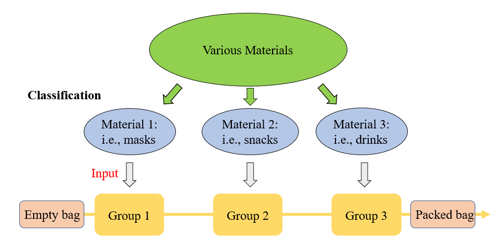
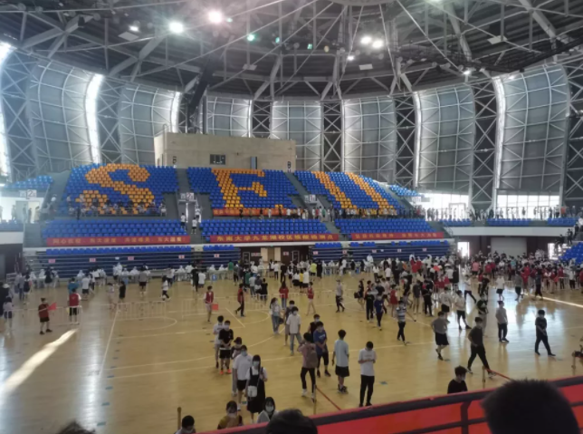

Nanjing's summer in 2021
Measured taken in the campus
The purpose of this section is to investigate measures taken by our school during the period of epidemic prevention and control in this summer, when a sudden wave of pandemic attacked Nanjing.
| Timeline | Events |
|---|---|
| 2021.07.20 | Nine airport cleaners at Lukou Airport test positive for nucleic acid. |
| 2021.07.21 | Southeast University issued a notice about the Epidemic Prevention and initiated the first nucleic acid test for all personnels. |
| 2021.07.22 | The format of curriculum is changed into online teaching. |
| 2021.07.23 | School leaders inspect the epidemic prevention and supply guarantee of the canteen in the Jiulonghu campus. |
| 2021.07.25 | Southeast University completed the second nucleic acid test overnight. |
In response to the sudden epidemic, the school held an emergency meeting as soon as possible to discuss the follow-up arrangements, then quickly issued a notice of the epidemic prevention. Various departments also responded quickly to the arrangements of the superiors and worked in parallel. For example, the school hospital organized multiple nucleic acid tests. The General Affairs Office solved the problems of disinfection work in the corridors of the apartment and the scheduling of the isolation place, at the same time, changed the structure of the dining table in the dining hall to ensure that the diners were separately seated. In addition, the library and the Teacher Student Service Center terminated offline services and provided online system services. Professors also turned into online teaching.
The utilize of network services during the epidemic is very efficient. We mainly studied the effect of network services on campus in this epidemic. The first is online teaching platform. The online platform provides an online teaching environment through software and the Internet, and it mainly uses video and voice sharing technology to build a virtual classroom, which solves the education problems of students. For instance, Online teaching platforms are mainly Tencent conference, QQ group classroom, Zoom, etc. The second is the application of online shared documents. The creator established an online document in an organization such as a department, and raised corresponding questions for comments and responses. The members of the organization own partial editing rights to feed back their own information and problems. In this epidemic, online shared documents provided a huge help for information statistics. For example, each department collected the health code and itinerary information of students through online documents, then reported to the General Affairs Office in time to prevent the possibility of proliferation of the virus.
At the same time, in response to the problems and difficulties of the students, through the collection and processing of online documents, not only the common problems of the students are counted, but the individual problems of students can also be solved, which reflected the humanistic care of our school. Finally, there are independent campus APPs, webpages and other functional applications. APPs can be considered as mobile phone software, used to provide online service systems, which perfectly covered offline service functions. In addition, the inner health report function can also monitor the everyday health status of teachers and student, at the same time, the application of the web function is much more efficient for the release of notification. Similar to the broadcast mechanism, teachers and students can also easily see the latest policies and the current situation of prevention and control.
In fact, despite the tremendous help brought by the online services, many affairs still urgently need enough manpower. When it comes to this special moment, many teachers and students voluntarily applied for volunteers. Through the research, we found that orderly volunteer work also had brought huge efficiency. Volunteers from the School of Automation contributed their efforts to various detection points in Nanjing. Volunteers from the School of Public Health formed an epidemiological investigation team and went to the Center for Disease Control and Prevention in Xuanwu District to participate in the investigation of epidemiology. Volunteers from the School of Civil Engineering signed up to join the nucleic acid testing site. Volunteers from the School of Life Sciences and Technology took the initiative to complete the disinfection work in the school and so on. In addition, all other schools of department have volunteers to distribute materials and provide various online activities to enrich the students' days of isolation. Regarding the packaging and distribution of materials, we investigated the work process of our school of department.
Considering the difficulties in the distribution of various materials, the volunteers adopted an assembly line work model. The personnel are divided into groups, and each group is responsible for a kind of material and then pass the loaded materials to the next group. In this way, more than 1,300 pieces of packed supplies were obtained quickly. Besides, due to the scattered distribution of the dormitories, in order to solve the difficult problem of transporting the last 100 meters of supplies, our department divided the areas in charge carefully, using the method of multiple grouping, which specifically means the volunteers were divided into three large groups. The large groups were further divided into groups containing 3-4 people. This method enabled volunteers to work in parallel, which ensures the accuracy and efficiency, respectively.
Assembly line work model
In summary, the various measures taken by our school made a great success in this period, which also provided a lot of help and reference in the prevention and control of the epidemic for other institutions.
An interview with the volunteer
Mengzhe Wang, a third year graduate student in our laboratory, participated in the volunteer work of nucleic acid detection in the campus. Her main duty is to guide everyone into the stadium and help them queue up orderly for nucleic acid detection. We were fortunate to have an interview with her.
When asked about the volunteer work, she memorized that "At that time, we were outside the stadium and saw some school employees who also wanted to do nucleic acid testing, but they should enter the stadium on the first floor while we were on the second floor. Wondering how to get inside, they didn't know where to go. When I saw them wandering in a daze and even want to line up with the students, I would take the initiative to tell them where to line up and where to do, and then they would also thank me. At that time, the itinerary code of many people turned to yellow, disabling them to go home. I felt that it was difficult for everyone in the school, whether students, teachers or staff."
There were hundreds of volunteers like Mengzhe, who tried their best to fight against the epidemic, taking the duty and responsibility of contemporary college students. For those who tried to sign up but were finally unable to serve as a volunteer, she pointed out that "First of all, thank you for your dedication to. We also hope that the epidemic in Nanjing and the whole country can be terminated as soon as possible. No matter where you are or whether you are a volunteer, as long as you give your love, it is already very nice. Besides, opportunities are everywhere. Although you may not be selected as a volunteer, as long as you hold this intention, you will always have the opportunity to help others and severe our socity."
Queuing for nucleic acid detection (Source: https://radio.seu.edu.cn)